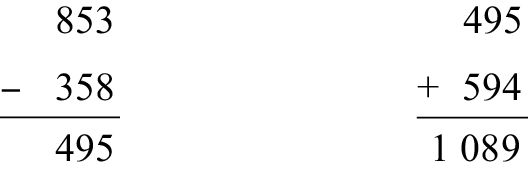
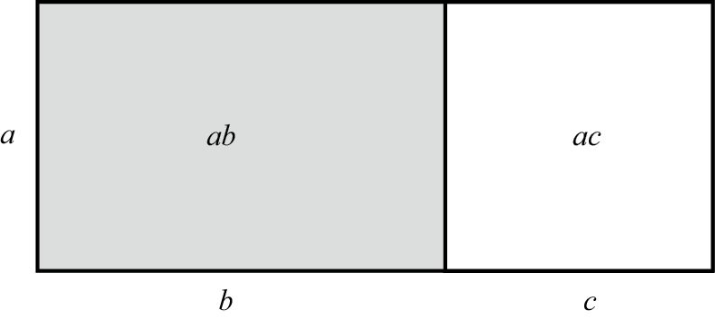

我们先思考一个问题：某个数字加上5之后，和是这个数字的3倍，请找出这个数字。
为了解答这道题，我们把这个未知数设为x。它加上5之后，就是x + 5；最初的3倍，就是3x。这两个量相等，因此我们需要解下面这个方程式：
3x = x + 5
从左右两边各减去x，方程式就变成：
2x = 5
左右两边同时除以2：
x = 5 / 2 = 2.5
由于2.5 + 5 = 7.5，与2.5的3倍正好相等，因此可以证明这个答案是正确的。
再为大家介绍一个可以利用代数知识来解释个中道理的魔术。写下一个三位数，要求三个数位上的数字逐步减小，例如842或951。然后，彻底颠倒这个三位数的数位次序，并用最初的三位数减去颠倒顺序后得到的三位数。之后，彻底颠倒得数的数位顺序，并与得数相加。我们以853这个数字为例，通过下列算式描述上述步骤：

现在，大家重新选择一个三位数。想好了吗？神奇的事情就要发生了。只要你严格按照上述步骤做，最后的得数一定是1 089！为什么？
代数可以揭开其中的秘密！假设我们选择的三位数是abc，其中a > b > c。我们知道，853 = (8×100) + (5×10) + 3。同理，数字abc=100a + 10b + c。数位完全颠倒之后，数字变成cba，可表示为100c + 10b + a。两个三位数相减之后，就会得到：
(100a + 10b + c) – (100c + 10b + a)
= (100a – a) + (10b – 10b) + (c – 100c)
= 99a – 99c = 99 (a – c)
换句话说，两个三位数的差必然是99的倍数。由于三个数位上的数字最初是逐步减小的，因此a – c至少等于2，或者说可能是2、3、4、5、6、7、8或9。那么，两个三位数之差只能是下面这些数字中的一个：
198、297、396、495、594、693、792或891
无论这个差到底是哪个数字，与数位颠倒之后的数字之和都是：
198 + 891 = 297 + 792 = 396 + 693 = 495 + 594 = 1 089
由此可以看出，最后的结果必然是1 089。
通过这个例子，我们可以看出代数的一个特点：进行代数运算时，必须对等式左右两边一视同仁。我把这条规则称为代数黄金法则。
例如，假设我们想求解下列方程式：
3 (2x + 10) = 90
我们的目标是解出x。先将方程式两边同时除以3，把方程式简化成：
2x + 10 = 30
再在两边同时减去10，把左边的10消掉。这样，方程式就会变成：
2x = 20
接下来两边同时除以2，结果就一目了然了：
x = 10
每次解完方程式，都要验证答案的准确性。在这个例子中，我们发现当x = 10时，3 (2x + 10) = 3×30=90，方程式成立。这个方程式还有其他解吗？没有了。如果还有其他解，这个x也需要满足方程式，因此我们可以确定x = 10是唯一解。
下面是一个与现实生活密切相关的代数问题，来自2014年某一期的《纽约时报》。该报称，索尼影视娱乐有限公司出品的一部电影投入市场之后，前4天的在线销售与出租的总金额是1 500万美元。索尼没有说明在线销售（单价15美元）与出租（单价6美元）分别贡献了多少销售额，但该公司宣布他们一共完成了200万单交易。为了帮助记者解决这个难题，我们用S代表在线销售交易量，用R代表在线出租交易量。由于总交易量是200万单，因此：
S + R = 2 000 000
我们还知道在线销售的单价是15美元，在线出租的单价是6美元，因此总销售额满足下列方程式：
15S + 6R = 15 000 000
根据第一个方程式，我们知道R = 2 000 000 – S。因此，第二个方程式可以改写成：
15S + 6 (2 000 000 – S) = 15 000 000
现在，方程式中只包含一个变量S，整理后就会得到：
9S + 12 000 000 = 15 000 000
两边同时减去12 000 000：
9S = 3 000 000
因此，S大约是100万的1/3，即S ≈333 333；R = 2 000 000 – S ≈1 666 667。（验证答案：总销售额为15×333 333+ 6×1 666 667≈15 000 000美元。）
本书一直在利用某个规则，它被称为“分配律”（the distributive law）。现在，我们需要对这个规则加以讨论。因为有了分配律之后，乘法和加法就可以密切合作了。分配律指出，对于任意数字a、b、c，都有：
a (b + c) = ab + ac
我们在计算一个两位数与一个一位数的乘积时，就会用到分配律。例如：
7×28 = 7×(20 + 8) =7×20 + 7×8 = 140 + 56 = 196
用统计学方法来思考，我们就会明白其中的道理。假设我有7袋硬币，每袋分别装有20枚金币和8枚银币，那么硬币的总数量是多少呢？从一个方面看，每袋装有28枚硬币，因此硬币总是7×28。从另一个方面看，我们有7×20枚金币和7×8枚银币，因此共有7×20 + 7×8枚硬币。也就是说，7×28 =7×20 +7×8。
我们也可以利用几何图形来理解分配律。如下图所示，请从两个不同的角度观察长方形的面积。

从一个角度看，长方形的面积是a (b + c)。从另一个角度看，长方形左边部分的面积是ab，右边部分的面积是ac，总面积是ab + ac。这可以证明，只要a、b、c是正数，分配律就是成立的。
顺便告诉大家，我们有时候会在数字与字母并存的情况下应用分配律。例如：
3 (2x + 7) = 6x + 21
从左至右看，这个方程式可以看作2x + 7的3倍。从右至左看，它又可以看作通过从6x和21中提取3的方式对6x + 21进行因式分解。
负数与负数的乘积是正数，这是为什么？例如，为什么 (–5)×(–7)= 35？针对这个问题，老师们给出了各种各样的解释。有的以抵销债务打比方，有的干脆说“就是这样的，没有什么道理可讲”。但是，真正的原因在于，我们希望分配律不仅适用于正数，而且适用于所有的数字。如果分配律对负数（和零）同样有效，就必须符合上述规则。下面，我来解释其中的道理。
假设我们承认 –5×0 = 0，–5×7 = –35。（我们也可以证明这两个等式是成立的，但是大多数人宁愿把它们作为一种事实来接受。）现在，观察下面这个算式：
–5×(–7 + 7)
它的得数是多少呢？从一个方面看，它等于 –5×0，而且我们已经知道 –5×0=0。从另一个方面看，我们可以利用分配律将它变形为［(–5)×(–7)］+ (–5×7)。因此：
［(–5)×(–7)］+(–5×7) =［(–5)×(–7)］–35 = 0
而且，由于［(–5)×(–7)］–35 = 0，由此可推导出(–5)× (–7)= 35。总之，无论a、b的值是多少，分配律都可以确保 (–a)×(–b) = ab成立。